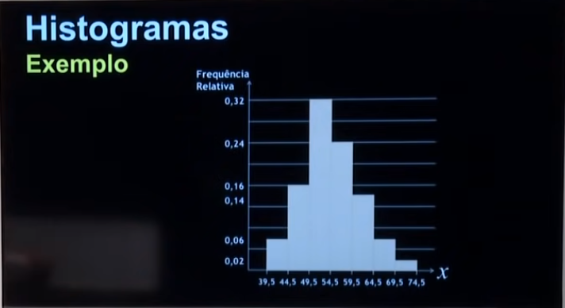

Disciplinas
-
Estatística e Probabilidade Concluído
Materiais
- (Vídeo 3) - Estatística - Aula 13 - Distribuição de frequência
-
Professor ministrante: André Fleury (Univesp)
Conteúdo
Distribuição de frequência
- Apresentar os conceitos de distribuição de frequência.
- Apresentar os elementos das distribuições de frequência.
- Apresentar o gráfico Histograma.
Método Estatístico - Apuração dos dados.
- Como descrever os dados estatísticos resultantes de variáveis quantitativas obtidas a partir da amostra?
Método Estatístico - Análise e Interpretação.
- Qualidade da decisão dependente da habilidade em compreender as informações contidas nesses dados.
Método Estatístico - Apresentação dos dados.
Distribuição de frequências e histogramas:
- Organização, apresentação e análise gráfica de uma série de dados.
- Matéria prima das análises e interpretações estatísticas.
Dados originais, ainda não prontos para análise.
Exemplo: quantidade de defeitos por lote.
| Lote | 1 | 2 | 3 | 4 | 5 | 6 | 7 | 8 | 9 | 10 | 11 | 12 | 13 | 14 | 15 | 16 | 17 | 18 | 19 | 20 |
|---|---|---|---|---|---|---|---|---|---|---|---|---|---|---|---|---|---|---|---|---|
| Defeitos | 1 | 3 | 2 | 3 | 2 | 5 | 1 | 3 | 4 | 3 | 2 | 1 | 5 | 5 | 4 | 4 | 2 | 2 | 5 | 3 |
Rol: (Conjunto ordenado dos valores obtidos)
Dados brutos organizados em ordem crescente ou decrescente.
Exemplo: quantidade de defeitos por lote.
| Defeitos | 1 | 1 | 1 | 2 | 2 | 2 | 2 | 2 | 3 | 3 | 3 | 3 | 3 | 4 | 4 | 4 | 5 | 5 | 5 | 5 |
|---|
Exemplo: número de reclamações de uma loja em site especializado.
| J | F | M | A | M | J | J | A | S | O | N | D | |
|---|---|---|---|---|---|---|---|---|---|---|---|---|
| 2012 | 6 | 2 | 5 | 1 | 0 | 3 | 2 | 1 | 3 | 5 | 5 | 3 |
| 2013 | 5 | 4 | 2 | 1 | 3 | 4 | 1 | 4 | 5 | 4 | 0 | 1 |
| 2014 | 3 | 1 | 2 | 4 | 3 | 1 | 4 | 1 | 0 | 3 | 0 | 2 |
| 2015 | 2 | 2 | 0 | 3 | 1 | 4 | 2 | 0 | 1 | 1 | 5 | 2 |
Rol: (Conjunto ordenado dos valores obtidos)
| 0 | 0 | 1 | 1 | 1 | 2 | 2 | 3 | 3 | 3 | 4 | 4 |
| 0 | 0 | 1 | 1 | 1 | 2 | 2 | 2 | 2 | 3 | 4 | 5 |
| 0 | 1 | 1 | 1 | 2 | 3 | 4 | 4 | 4 | 4 | 5 | 5 |
| 0 | 1 | 1 | 2 | 2 | 3 | 3 | 3 | 5 | 5 | 5 | 6 |
Frequência de uma observação.
- Número de repetições dessa observação, quantas vezes determinado fenômeno acontece.
- Exemplo: número de falhas críticas de um sistema por dia.
| Falhas/dia | 0 | 1 | 2 | 3 | 4 |
|---|---|---|---|---|---|
| f(classe) | 25 | 3 | 2 | 1 | 0 |
Distribuição de frequência sem intervalos de classe.
- Valores contados conforme repetição.
- Funciona com poucos valores.
Exemplo: número de prontos numa prova com 10 questões.
| Nota | 1 | 2 | 3 | 4 | 5 | 6 | 7 | 8 | 9 | 10 |
|---|---|---|---|---|---|---|---|---|---|---|
| Número de Alunos | 0 | 3 | 6 | 13 | 22 | 16 | 9 | 5 | 3 | 1 |
Distribuição de frequência com intervalos de classe.
- Agrupamento dos valores em vários intervalos de classe.
- Funciona quando existem muitos valores.
Exemplo: largura média de peça usinada.
- O símbolo → representa um intervalo fechado à esquerda e aberto à direita.
- Significa que o número à esquerda pertence à classe e o número à direita não pertence.
| Largura(mm) | Número de Peças |
|---|---|
| 147 → 148 | 18 |
| 148 → 149 | 75 |
| 149 → 150 | 192 |
| 150 → 151 | 182 |
| 151 → 152 | 56 |
| 152 → 153 | 14 |
Dados discretos
Exemplos:
- Número de erros num programa de computador: 0, 1, 2, 3, 4, ...
- Número de lotes produzidos: 112, 315, 761, ...
- Quantidade de acidentes em determinada industria: 4, 10, 12, 15, ...
|--|--|--|--|---->
0 1 2 3 4
Dados contínuos
- A variável assume valores em intervalos da reta real.
|-**-|--|--|--|---->
0 1 2 3 4
Exemplos:
- Peso das peças: 55,5kg; 56,1kg; 53,9kg; 54,2kg; ...
- Distância entre cidades: 35,5km; 48,6km; 100,10km; ...
- Tempo de atravessamento: 509,4min; 121,4min; 98,6min; ...
|-**-|--|--|--->
0 1 2 3
Amplitude
- É a diferença entre o maior e o menor número do ROL.
Amplitude
^
| Eixo Y:
| |
| | * |
| |---------------------------------------
| Eixo X: ROL 1 ROL 2 ROL 3 ROL 4 ROL 5
|
+------------------------> Conjunto de dados
Exemplo: número de reclamações de uma loja em site especializado.
| 0 | 0 | 1 | 1 | 1 | 2 | 2 | 3 | 3 | 3 | 4 | 4 |
| 0 | 0 | 1 | 1 | 1 | 2 | 2 | 2 | 2 | 3 | 4 | 5 |
| 0 | 1 | 1 | 1 | 2 | 3 | 4 | 4 | 4 | 4 | 5 | 5 |
| 0 | 1 | 1 | 2 | 2 | 3 | 3 | 3 | 5 | 5 | 5 | 6 |
- Amplitude A = 6 - 0 = 6
- Intervalos de variação da variável.
- Representadas simbolicamente por i, sendo i = 1, 2, 3, ..., k
- Por sua vez k é o número total de classes da distribuição.
Exemplo: largura média de peças usinada.
- ∑ apresenta a soma dos valores.
- Intervalo 149 → 150 define a classe i = 3.
- Total de classes (i) = 6.
| Largura(mm) | Número de Peças |
|---|---|
| 147 → 148 | 18 |
| 148 → 149 | 75 |
| 149 → 150 | 192 |
| 150 → 151 | 182 |
| 151 → 152 | 56 |
| 152 → 153 | 14 |
| Total | 537 |
Número de Classes em uma Distribuição
- N: número de elementos numa amostra.
- K: número de classes.
- K = √N
Exemplo:
- N = 40
- K = √40 = 6,3
- Arredondando para baixo K ≅ 6
Amplitude de um intervalo de classe h.
- A: amplitude.
- K: número de classes.
- H = A/K
Exemplo:
- N = 40
- K = 6
- H = A/K = 40/6 = 6,67
- Arredondando para cima H = 7
Exemplo: computadores produzidos por mês num posto de trabalho.
| 61 | 65 | 43 | 53 | 55 | 51 | 58 | 55 | 59 | 56 |
| 52 | 53 | 62 | 49 | 68 | 51 | 50 | 67 | 62 | 64 |
| 53 | 56 | 48 | 50 | 61 | 44 | 64 | 53 | 54 | 55 |
| 48 | 54 | 57 | 40 | 54 | 71 | 57 | 53 | 46 | 48 |
| 55 | 46 | 57 | 54 | 48 | 63 | 49 | 55 | 52 | 51 |
Exemplo: computadores produzidos.
- 40 é o menor valor
- 70 é o maior valor
- 50 é o número de meses
- N = 50
- K = √50 = 7,07 ≅ 7
- H = A/K = (71 - 40)/7 = 31/7 ≅ 4,43
- Usaremos H = 5
Verificação:
- K = 7
- H = 5
- P₀ = 40
- Pₙ = 71
- P₀ + K . H > Pₙ
- 40 + 7 . 5 = 75 > 71
Limites Aparentes
| 40 → 45 |
| 45 → 50 |
| 50 → 55 |
| 55 → 60 |
| 60 → 65 |
| 65 → 70 |
| 70 → 75 |
Limites Reais
| 39,5 → 44,5 |
| 44,5 → 49,5 |
| 49,5 → 54,5 |
| 54,5 → 59,5 |
| 59,5 → 64,5 |
| 64,5 → 69,5 |
| 69,5 → 74,5 |
Usar sempre a precisão dos limites da classe como metade da precisão dos dados.
| Limites Aparentes | Limites Reais | Frequência |
|---|---|---|
| 40 → 45 | 39,5 → 44,5 | 3 |
| 45 → 50 | 44,5 → 49,5 | 8 |
| 50 → 55 | 49,5 → 54,5 | 16 |
| 55 → 60 | 54,5 → 59,5 | 12 |
| 60 → 65 | 59,5 → 64,5 | 7 |
| 65 → 70 | 64,5 → 69,5 | 3 |
| 70 → 75 | 69,5 → 74,5 | 1 |
| 50 |
Frequências Relativas
- Razão entre as frequências simples e o número total de dados.
- fi = Ni/N
Exemplo:
- f₄ = 12/50 = 0,24
| Limites Aparentes | Limites Reais | Frequência | Frequência Relativa |
|---|---|---|---|
| 40 → 45 | 39,5 → 44,5 | 3 | 0,06 |
| 45 → 50 | 44,5 → 49,5 | 8 | 0,16 |
| 50 → 55 | 49,5 → 54,5 | 16 | 0,32 |
| 55 → 60 | 54,5 → 59,5 | 12 | 0,24 |
| 60 → 65 | 59,5 → 64,5 | 7 | 0,14 |
| 65 → 70 | 64,5 → 69,5 | 3 | 0,06 |
| 70 → 75 | 69,5 → 74,5 | 1 | 0,02 |
| 50 | 1,00 |
Ponto Médio da Classe
- Ponto que divide o intervalo de classe em duas partes iguais.
- xᵢ = (Lᵢₘᶠ + Lₛᵤₚ)/2
Exemplo:
- x₅ = (59,5 + 64,5)/2 = 62
| Limites Aparentes | Limites Reais | xᵢ | Frequência |
|---|---|---|---|
| 40 → 45 | 39,5 → 44,5 | 42 | 3 |
| 45 → 50 | 44,5 → 49,5 | 47 | 8 |
| 50 → 55 | 49,5 → 54,5 | 52 | 16 |
| 55 → 60 | 54,5 → 59,5 | 57 | 12 |
| 60 → 65 | 59,5 → 64,5 | 62 | 7 |
| 65 → 70 | 64,5 → 69,5 | 67 | 3 |
| 70 → 75 | 69,5 → 74,5 | 72 | 1 |
| 50 |
Frequência Acumulada
- Total das frequências dos valores inferiores ao limite superior de uma classe
| Limites Aparentes | Limites Reais | Frequência Relativa | Frequência Acumulada |
|---|---|---|---|
| 40 → 45 | 39,5 → 44,5 | 0,06 | 0,06 |
| 45 → 50 | 44,5 → 49,5 | 0,16 | 0,22 |
| 50 → 55 | 49,5 → 54,5 | 0,32 | 0,54 |
| 55 → 60 | 54,5 → 59,5 | 0,24 | 0,78 |
| 60 → 65 | 59,5 → 64,5 | 0,14 | 0,92 |
| 65 → 70 | 64,5 → 69,5 | 0,06 | 0,98 |
| 70 → 75 | 69,5 → 74,5 | 0,02 | 1,00 |
Neste caso, basta somar o valor anterior com o valor atual.
- 0,06 se repete
- 0,06 + 0,16 = 0,22
- 0,22 + 0,32 = 0,54 ...
Definição
- Conjunto de retângulos justapostos.
- Bases se localizam sobre o eixo horizontal.
- Pontos médios coincidem com pontos médios.
- Larguras dos retângulos iguais às amplitudes dos intervalos.
- Alturas dos retângulos devem ser proporcionais às frequências das classes.
Eixo Y:
|
| * |
| * |
| * |
| |
|---|---|---|---|
Eixo X: 0,5 - 1,5 1,5 - 2,5 2,5 - 3,5 3,5 - 4,5
